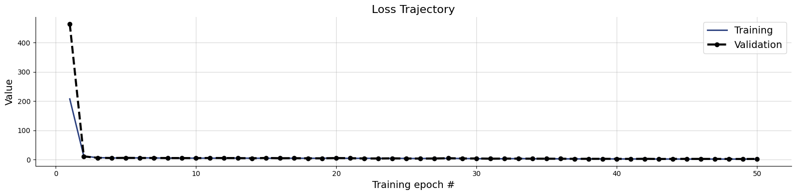
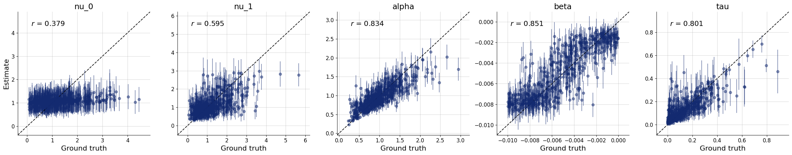
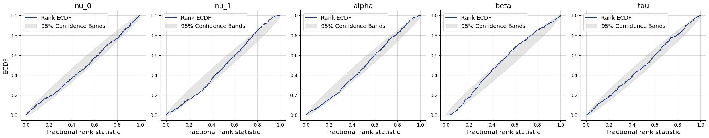
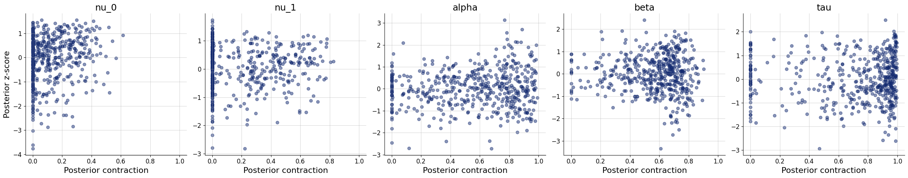
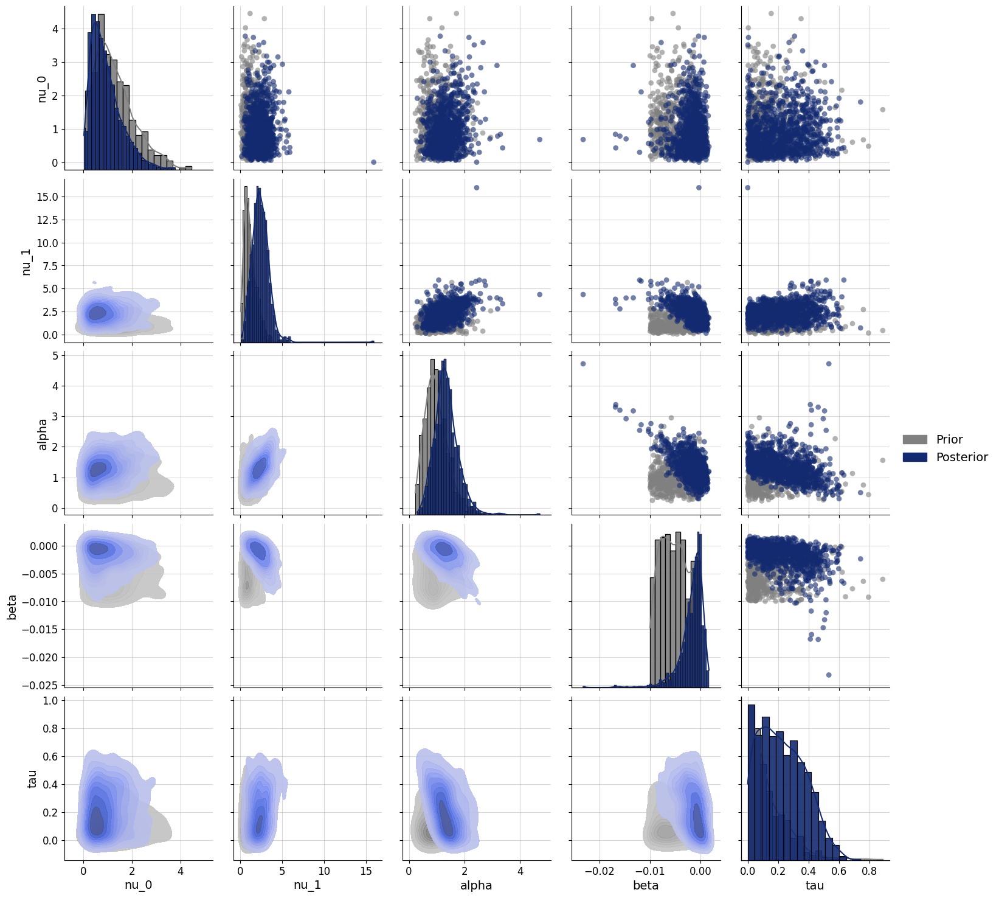
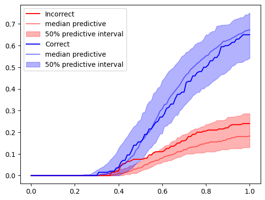

import os
os.environ["KERAS_BACKEND"] = "jax"
import keras
import bayesflow as bf
import numpy as np
import pandas as pd
import matplotlib.pyplot as plt
from scipy import statsRacing diffusion model with covariate
Two choice task (Racing diffusion model)
We’ll assume a simple RDM with two choice alternatives (Tillman et al., 2020).
Here we will simplify the model to include no bias, no variability in starting points. Instead of modeling one accumulator for each of [left, right] responses, we will simply model one accumulator for “incorrect” and one accumulator for “correct” response. This makes it a bit easier to simulate from (we do not need to simulate stimuli).
Additionally, we assume that the decision threshold is a function of time. Specifically, this means that the decision threshold decreases linearly with trial number, according to threshold = \(\alpha\) + \(\beta\)*trial.
The model has four parameters: 2 drift rates (incorrect - \(\nu_0\), correct \(\nu_1\)), decision threshold intercept \(\alpha\), decision threshold slope \(\beta\)#, and non-decision time \(\tau\).
def evidence_accumulation(nu, max_t, dt):
timesteps = int(max_t / dt)
t = np.linspace(0, max_t, timesteps)
noise = np.random.normal(0, 1, size=timesteps) * np.sqrt(dt)
evidence = nu * t + np.cumsum(noise)
return t, evidence
def context(n=None):
if n is None:
n = np.random.randint(200, 201)
return dict(n=n)
def prior(nu=None, alpha=None, beta=None, tau=None):
if nu is None:
nu=np.random.dirichlet([2, 2])
nu=np.random.gamma(shape=5, scale=0.5) * nu
if alpha is None:
alpha=np.random.gamma(shape=5, scale=0.2)
if beta is None:
beta=np.random.beta(a=1, b=1)* -0.01
if tau is None:
tau=np.random.exponential(0.15)
else:
tau=tau.item()
return dict(nu=nu, alpha=alpha, beta=beta, tau=tau)
# generate data for a single trial
def trial(nu, alpha, tau, max_t, dt):
response = -1
min_t = max_t
# loop over accumulators
# if an accumulator has a smaller passage time than the current minimum
# save it as the fastest accumulator (response)
for resp, drift in enumerate(nu):
t, evidence = evidence_accumulation(drift, max_t, dt)
passage = np.argmax(evidence > alpha)
t = max_t if passage==0 else t[passage]
if t < min_t:
min_t = t
response = resp
return min_t+tau, response
# generate data for n trials
# keep the data.shape always to max_n
# the rest is filled with 0s
def likelihood(n, nu, alpha, beta, tau, max_t=3.0, dt=0.02, max_n=200):
rt = np.zeros(max_n)
response = np.zeros(max_n)
observed = np.zeros(max_n)
for i in range(n):
threshold = alpha + beta * i # LvM: the threshold is a function of the trial number
# if the treshold is below zero, the participant storms out of the lab because they ran out of patience
if threshold < 0:
break
result = trial(nu, threshold, tau, max_t, dt)
rt[i] = result[0]
response[i] = result[1]
observed[i] = 1
return dict(rt=rt, response=response, trial=range(n), observed=observed)
simulator = bf.make_simulator([context, prior, likelihood])adapter = (bf.Adapter()
.as_set(["rt", "response", "trial", "observed"])
.constrain(["nu", "alpha", "tau"], lower=0)
.standardize(include="nu", mean= 0.7, std=1.2 )
.standardize(include="alpha", mean= 0.5, std=0.7 )
.standardize(include="beta", mean= -.05, std=0.02 )
.standardize(include="tau", mean=-2.5, std=1.3 )
.standardize(include="trial", mean= 100, std=60 )
.concatenate(["nu", "alpha","beta", "tau"], into="inference_variables")
.concatenate(["rt", "response", "trial", "observed"], into="summary_variables")
.rename("n", "inference_conditions")
)workflow = bf.BasicWorkflow(
simulator = simulator,
adapter = adapter,
inference_network = bf.networks.CouplingFlow(
depth=15,
subnet_kwargs=dict(dropout=False)
),
summary_network=bf.networks.DeepSet(
depth=15,
base_distribution="normal",
dropout=False
),
initial_learning_rate = 1e-3,
inference_variables = ["nu", "alpha", "beta", "tau"],
inference_conditions = ["n"],
summary_variables = ["rt", "response","trial","observed"]
)train_data = simulator.sample(2_500)
validation_data = simulator.sample(500)
test_data = simulator.sample(500)history=workflow.fit_offline(
data=train_data,
epochs=50,
batch_size=250,
validation_data=validation_data
)INFO:bayesflow:Fitting on dataset instance of OfflineDataset.
INFO:bayesflow:Building on a test batch.Epoch 1/50
10/10 ━━━━━━━━━━━━━━━━━━━━ 447s 10s/step - loss: 2481876.2500 - loss/inference_loss: 2481875.7500 - loss/summary_loss: 0.7316 - val_loss: 463.8929 - val_loss/inference_loss: 463.2145 - val_loss/summary_loss: 0.6784
Epoch 2/50
10/10 ━━━━━━━━━━━━━━━━━━━━ 79s 8s/step - loss: 59.6651 - loss/inference_loss: 58.9418 - loss/summary_loss: 0.7233 - val_loss: 11.2292 - val_loss/inference_loss: 10.7928 - val_loss/summary_loss: 0.4364
Epoch 3/50
10/10 ━━━━━━━━━━━━━━━━━━━━ 79s 8s/step - loss: 7.9351 - loss/inference_loss: 7.6685 - loss/summary_loss: 0.2666 - val_loss: 6.5161 - val_loss/inference_loss: 6.3241 - val_loss/summary_loss: 0.1920
Epoch 4/50
10/10 ━━━━━━━━━━━━━━━━━━━━ 80s 8s/step - loss: 6.3099 - loss/inference_loss: 6.1192 - loss/summary_loss: 0.1907 - val_loss: 5.9470 - val_loss/inference_loss: 5.7425 - val_loss/summary_loss: 0.2046
Epoch 5/50
10/10 ━━━━━━━━━━━━━━━━━━━━ 81s 8s/step - loss: 5.9675 - loss/inference_loss: 5.7735 - loss/summary_loss: 0.1940 - val_loss: 6.3504 - val_loss/inference_loss: 6.1765 - val_loss/summary_loss: 0.1739
Epoch 6/50
10/10 ━━━━━━━━━━━━━━━━━━━━ 80s 8s/step - loss: 6.5348 - loss/inference_loss: 6.2088 - loss/summary_loss: 0.3259 - val_loss: 6.0203 - val_loss/inference_loss: 5.7255 - val_loss/summary_loss: 0.2947
Epoch 7/50
10/10 ━━━━━━━━━━━━━━━━━━━━ 77s 8s/step - loss: 6.0858 - loss/inference_loss: 5.7369 - loss/summary_loss: 0.3489 - val_loss: 6.0578 - val_loss/inference_loss: 5.7619 - val_loss/summary_loss: 0.2960
Epoch 8/50
10/10 ━━━━━━━━━━━━━━━━━━━━ 75s 8s/step - loss: 5.7880 - loss/inference_loss: 5.5090 - loss/summary_loss: 0.2790 - val_loss: 5.7461 - val_loss/inference_loss: 5.5063 - val_loss/summary_loss: 0.2398
Epoch 9/50
10/10 ━━━━━━━━━━━━━━━━━━━━ 76s 8s/step - loss: 5.6276 - loss/inference_loss: 5.3413 - loss/summary_loss: 0.2863 - val_loss: 5.7012 - val_loss/inference_loss: 5.4693 - val_loss/summary_loss: 0.2319
Epoch 10/50
10/10 ━━━━━━━━━━━━━━━━━━━━ 77s 8s/step - loss: 5.5524 - loss/inference_loss: 5.2789 - loss/summary_loss: 0.2735 - val_loss: 5.5155 - val_loss/inference_loss: 5.2490 - val_loss/summary_loss: 0.2665
Epoch 11/50
10/10 ━━━━━━━━━━━━━━━━━━━━ 80s 8s/step - loss: 5.4444 - loss/inference_loss: 5.1554 - loss/summary_loss: 0.2891 - val_loss: 6.0276 - val_loss/inference_loss: 5.8132 - val_loss/summary_loss: 0.2143
Epoch 12/50
10/10 ━━━━━━━━━━━━━━━━━━━━ 77s 8s/step - loss: 5.4726 - loss/inference_loss: 5.1981 - loss/summary_loss: 0.2746 - val_loss: 5.7865 - val_loss/inference_loss: 5.4634 - val_loss/summary_loss: 0.3231
Epoch 13/50
10/10 ━━━━━━━━━━━━━━━━━━━━ 79s 8s/step - loss: 5.5793 - loss/inference_loss: 5.2628 - loss/summary_loss: 0.3165 - val_loss: 5.5894 - val_loss/inference_loss: 5.3168 - val_loss/summary_loss: 0.2726
Epoch 14/50
10/10 ━━━━━━━━━━━━━━━━━━━━ 82s 8s/step - loss: 5.4236 - loss/inference_loss: 5.1230 - loss/summary_loss: 0.3005 - val_loss: 5.0572 - val_loss/inference_loss: 4.8010 - val_loss/summary_loss: 0.2563
Epoch 15/50
10/10 ━━━━━━━━━━━━━━━━━━━━ 80s 8s/step - loss: 5.2587 - loss/inference_loss: 4.9706 - loss/summary_loss: 0.2881 - val_loss: 6.0406 - val_loss/inference_loss: 5.8010 - val_loss/summary_loss: 0.2396
Epoch 16/50
10/10 ━━━━━━━━━━━━━━━━━━━━ 79s 8s/step - loss: 5.3925 - loss/inference_loss: 5.1212 - loss/summary_loss: 0.2713 - val_loss: 5.2179 - val_loss/inference_loss: 4.9951 - val_loss/summary_loss: 0.2227
Epoch 17/50
10/10 ━━━━━━━━━━━━━━━━━━━━ 80s 8s/step - loss: 5.2271 - loss/inference_loss: 4.9291 - loss/summary_loss: 0.2980 - val_loss: 5.3982 - val_loss/inference_loss: 5.1697 - val_loss/summary_loss: 0.2285
Epoch 18/50
10/10 ━━━━━━━━━━━━━━━━━━━━ 83s 8s/step - loss: 5.1509 - loss/inference_loss: 4.8469 - loss/summary_loss: 0.3040 - val_loss: 4.9293 - val_loss/inference_loss: 4.6883 - val_loss/summary_loss: 0.2410
Epoch 19/50
10/10 ━━━━━━━━━━━━━━━━━━━━ 80s 8s/step - loss: 4.9497 - loss/inference_loss: 4.6393 - loss/summary_loss: 0.3105 - val_loss: 4.9728 - val_loss/inference_loss: 4.7078 - val_loss/summary_loss: 0.2650
Epoch 20/50
10/10 ━━━━━━━━━━━━━━━━━━━━ 76s 8s/step - loss: 5.2719 - loss/inference_loss: 4.9577 - loss/summary_loss: 0.3142 - val_loss: 5.7347 - val_loss/inference_loss: 5.4575 - val_loss/summary_loss: 0.2772
Epoch 21/50
10/10 ━━━━━━━━━━━━━━━━━━━━ 78s 8s/step - loss: 4.9919 - loss/inference_loss: 4.6927 - loss/summary_loss: 0.2992 - val_loss: 5.3573 - val_loss/inference_loss: 5.1180 - val_loss/summary_loss: 0.2393
Epoch 22/50
10/10 ━━━━━━━━━━━━━━━━━━━━ 80s 8s/step - loss: 4.8316 - loss/inference_loss: 4.5589 - loss/summary_loss: 0.2728 - val_loss: 4.4284 - val_loss/inference_loss: 4.2041 - val_loss/summary_loss: 0.2243
Epoch 23/50
10/10 ━━━━━━━━━━━━━━━━━━━━ 82s 8s/step - loss: 4.8698 - loss/inference_loss: 4.5886 - loss/summary_loss: 0.2812 - val_loss: 4.3555 - val_loss/inference_loss: 4.1169 - val_loss/summary_loss: 0.2386
Epoch 24/50
10/10 ━━━━━━━━━━━━━━━━━━━━ 76s 8s/step - loss: 4.6208 - loss/inference_loss: 4.3398 - loss/summary_loss: 0.2809 - val_loss: 4.8037 - val_loss/inference_loss: 4.4913 - val_loss/summary_loss: 0.3123
Epoch 25/50
10/10 ━━━━━━━━━━━━━━━━━━━━ 79s 8s/step - loss: 4.4561 - loss/inference_loss: 4.1520 - loss/summary_loss: 0.3041 - val_loss: 4.3030 - val_loss/inference_loss: 4.0572 - val_loss/summary_loss: 0.2458
Epoch 26/50
10/10 ━━━━━━━━━━━━━━━━━━━━ 80s 8s/step - loss: 4.2359 - loss/inference_loss: 3.9303 - loss/summary_loss: 0.3056 - val_loss: 4.0600 - val_loss/inference_loss: 3.8294 - val_loss/summary_loss: 0.2306
Epoch 27/50
10/10 ━━━━━━━━━━━━━━━━━━━━ 81s 8s/step - loss: 4.3664 - loss/inference_loss: 4.0516 - loss/summary_loss: 0.3148 - val_loss: 4.3168 - val_loss/inference_loss: 4.0267 - val_loss/summary_loss: 0.2901
Epoch 28/50
10/10 ━━━━━━━━━━━━━━━━━━━━ 77s 8s/step - loss: 4.6645 - loss/inference_loss: 4.3383 - loss/summary_loss: 0.3262 - val_loss: 5.2905 - val_loss/inference_loss: 4.9483 - val_loss/summary_loss: 0.3422
Epoch 29/50
10/10 ━━━━━━━━━━━━━━━━━━━━ 78s 8s/step - loss: 4.7504 - loss/inference_loss: 4.3712 - loss/summary_loss: 0.3792 - val_loss: 4.3816 - val_loss/inference_loss: 4.0359 - val_loss/summary_loss: 0.3456
Epoch 30/50
10/10 ━━━━━━━━━━━━━━━━━━━━ 79s 8s/step - loss: 4.0697 - loss/inference_loss: 3.6948 - loss/summary_loss: 0.3749 - val_loss: 4.3868 - val_loss/inference_loss: 4.0687 - val_loss/summary_loss: 0.3181
Epoch 31/50
10/10 ━━━━━━━━━━━━━━━━━━━━ 80s 8s/step - loss: 3.8667 - loss/inference_loss: 3.4951 - loss/summary_loss: 0.3716 - val_loss: 3.5801 - val_loss/inference_loss: 3.2828 - val_loss/summary_loss: 0.2973
Epoch 32/50
10/10 ━━━━━━━━━━━━━━━━━━━━ 80s 8s/step - loss: 3.8138 - loss/inference_loss: 3.4788 - loss/summary_loss: 0.3350 - val_loss: 3.9115 - val_loss/inference_loss: 3.6640 - val_loss/summary_loss: 0.2475
Epoch 33/50
10/10 ━━━━━━━━━━━━━━━━━━━━ 78s 8s/step - loss: 4.2117 - loss/inference_loss: 3.9011 - loss/summary_loss: 0.3106 - val_loss: 3.7474 - val_loss/inference_loss: 3.5055 - val_loss/summary_loss: 0.2419
Epoch 34/50
10/10 ━━━━━━━━━━━━━━━━━━━━ 80s 8s/step - loss: 3.6181 - loss/inference_loss: 3.3031 - loss/summary_loss: 0.3150 - val_loss: 3.6324 - val_loss/inference_loss: 3.3973 - val_loss/summary_loss: 0.2351
Epoch 35/50
10/10 ━━━━━━━━━━━━━━━━━━━━ 77s 8s/step - loss: 3.3222 - loss/inference_loss: 2.9961 - loss/summary_loss: 0.3261 - val_loss: 3.5649 - val_loss/inference_loss: 3.2783 - val_loss/summary_loss: 0.2866
Epoch 36/50
10/10 ━━━━━━━━━━━━━━━━━━━━ 80s 8s/step - loss: 3.1659 - loss/inference_loss: 2.8447 - loss/summary_loss: 0.3212 - val_loss: 3.3711 - val_loss/inference_loss: 3.0596 - val_loss/summary_loss: 0.3115
Epoch 37/50
10/10 ━━━━━━━━━━━━━━━━━━━━ 78s 8s/step - loss: 3.2770 - loss/inference_loss: 2.9556 - loss/summary_loss: 0.3214 - val_loss: 3.1489 - val_loss/inference_loss: 2.8473 - val_loss/summary_loss: 0.3016
Epoch 38/50
10/10 ━━━━━━━━━━━━━━━━━━━━ 81s 8s/step - loss: 3.0455 - loss/inference_loss: 2.7263 - loss/summary_loss: 0.3192 - val_loss: 3.1324 - val_loss/inference_loss: 2.8601 - val_loss/summary_loss: 0.2723
Epoch 39/50
10/10 ━━━━━━━━━━━━━━━━━━━━ 80s 8s/step - loss: 2.9168 - loss/inference_loss: 2.5954 - loss/summary_loss: 0.3214 - val_loss: 3.0987 - val_loss/inference_loss: 2.8284 - val_loss/summary_loss: 0.2703
Epoch 40/50
10/10 ━━━━━━━━━━━━━━━━━━━━ 79s 8s/step - loss: 2.7912 - loss/inference_loss: 2.4690 - loss/summary_loss: 0.3222 - val_loss: 3.0236 - val_loss/inference_loss: 2.7303 - val_loss/summary_loss: 0.2933
Epoch 41/50
10/10 ━━━━━━━━━━━━━━━━━━━━ 79s 8s/step - loss: 2.6836 - loss/inference_loss: 2.3553 - loss/summary_loss: 0.3282 - val_loss: 2.8232 - val_loss/inference_loss: 2.5458 - val_loss/summary_loss: 0.2774
Epoch 42/50
10/10 ━━━━━━━━━━━━━━━━━━━━ 82s 8s/step - loss: 2.5994 - loss/inference_loss: 2.2767 - loss/summary_loss: 0.3227 - val_loss: 3.1882 - val_loss/inference_loss: 2.9103 - val_loss/summary_loss: 0.2779
Epoch 43/50
10/10 ━━━━━━━━━━━━━━━━━━━━ 83s 8s/step - loss: 2.5226 - loss/inference_loss: 2.1888 - loss/summary_loss: 0.3339 - val_loss: 2.5523 - val_loss/inference_loss: 2.2820 - val_loss/summary_loss: 0.2703
Epoch 44/50
10/10 ━━━━━━━━━━━━━━━━━━━━ 81s 8s/step - loss: 2.4778 - loss/inference_loss: 2.1490 - loss/summary_loss: 0.3288 - val_loss: 2.8602 - val_loss/inference_loss: 2.5891 - val_loss/summary_loss: 0.2712
Epoch 45/50
10/10 ━━━━━━━━━━━━━━━━━━━━ 80s 8s/step - loss: 2.4191 - loss/inference_loss: 2.0947 - loss/summary_loss: 0.3243 - val_loss: 2.9102 - val_loss/inference_loss: 2.6145 - val_loss/summary_loss: 0.2957
Epoch 46/50
10/10 ━━━━━━━━━━━━━━━━━━━━ 80s 8s/step - loss: 2.3937 - loss/inference_loss: 2.0576 - loss/summary_loss: 0.3361 - val_loss: 2.7691 - val_loss/inference_loss: 2.5065 - val_loss/summary_loss: 0.2626
Epoch 47/50
10/10 ━━━━━━━━━━━━━━━━━━━━ 76s 8s/step - loss: 2.3785 - loss/inference_loss: 2.0467 - loss/summary_loss: 0.3318 - val_loss: 2.7930 - val_loss/inference_loss: 2.4943 - val_loss/summary_loss: 0.2987
Epoch 48/50
10/10 ━━━━━━━━━━━━━━━━━━━━ 95s 10s/step - loss: 2.3532 - loss/inference_loss: 2.0243 - loss/summary_loss: 0.3288 - val_loss: 2.6434 - val_loss/inference_loss: 2.3573 - val_loss/summary_loss: 0.2861
Epoch 49/50
10/10 ━━━━━━━━━━━━━━━━━━━━ 4652s 511s/step - loss: 2.3410 - loss/inference_loss: 2.0102 - loss/summary_loss: 0.3307 - val_loss: 2.5182 - val_loss/inference_loss: 2.2583 - val_loss/summary_loss: 0.2600
Epoch 50/50
10/10 ━━━━━━━━━━━━━━━━━━━━ 81s 8s/step - loss: 2.3267 - loss/inference_loss: 1.9953 - loss/summary_loss: 0.3313 - val_loss: 2.7635 - val_loss/inference_loss: 2.5100 - val_loss/summary_loss: 0.2535plots=workflow.plot_default_diagnostics(test_data=test_data)



Application to data
Here we will work with data from Katsimpokis et al (2021), Experiment 2. In this experiment, participants are asked to indicate which of two flashing circles has the higher flash rate. Additionally, they are either asked to be Fast or Accurate, and to respond before a deadline or not, in a full factorial manner. The file flash.csv only contains data from the Accuracy instruction.
data_inference = pd.read_csv("flash.csv")data_inference['condition'].unique()array(['Deadline', 'No Deadline'], dtype=object)data_inference_grouped = data_inference.groupby(["subject", "condition"])data_inference_dict = {
key: np.array([group[key].values.reshape(200, 1) for _, group in data_inference_grouped])
for key in ['rt', 'response', 'trial','observed']}
data_inference_dict["n"] = np.sum(data_inference_dict["observed"], axis=1)
print({key: value.shape for key, value in data_inference_dict.items()}){'rt': (48, 200, 1), 'response': (48, 200, 1), 'trial': (48, 200, 1), 'observed': (48, 200, 1), 'n': (48, 1)}posterior_samples = workflow.sample(conditions=data_inference_dict, num_samples=1000)# pick the first participant, first condition
posterior = {key: value[0] for key, value in posterior_samples.items()}
posterior['nu'].shape(1000, 2)priors = dict(nu=test_data["nu"], alpha=test_data["alpha"], beta=test_data["beta"], tau=test_data["tau"])
f=bf.diagnostics.pairs_posterior(estimates=posterior, priors=priors)
The model is still quite uncertain about the parameter estimates, shown by the large ovelap between prior and posterior. There is a bit of a trade-off in this case between the \(\alpha\) and \(\beta\) parameters (but not as big as I expected). This is because they jointly explain the same aspect of the data (response caution). A higher \(\alpha\) means that on the first trial a participant is more conservative. So to get to the same average level of conservativeness, the \(\beta\) needs to be more negative, hence the negative relation.
Let’s look at another participant:
# pick second participant, second condition
posterior = {key: value[3] for key, value in posterior_samples.items()}
f=bf.diagnostics.pairs_posterior(estimates=posterior, priors=priors)def ecdf(rt, response, observed, **kwargs):
observed_mask = (observed == 1)
response_0_mask = ((response == 0) & observed_mask)
response_1_mask = ((response == 1) & observed_mask)
response_0_prop = np.sum(response_0_mask) / np.sum(observed_mask)
response_1_prop = np.sum(response_1_mask) / np.sum(observed_mask)
response_0_ecdf = stats.ecdf(rt[response_0_mask]).cdf
response_0_ecdf = response_0_prop * response_0_ecdf.evaluate(np.linspace(0, 1, 101))
response_1_ecdf = stats.ecdf(rt[response_1_mask]).cdf
response_1_ecdf = response_1_prop * response_1_ecdf.evaluate(np.linspace(0, 1, 101))
return response_0_ecdf, response_1_ecdfSelect a participant for whom to display the goodness-of-fit:
data = data_inference_grouped.get_group((1, 'No Deadline'))
plot_data = ecdf(**data)posterior_predictives = simulator.sample(500, **posterior)plot_data_predictive = []
for i in range(100):
x = { key: value[i:i+1,...] for key, value in posterior_predictives.items()}
plot_data_predictive.append(ecdf(**x))
plot_data_predictive = np.array(plot_data_predictive)plot_data_quantiles = np.quantile(
plot_data_predictive,
q = [0.25, 0.5, 0.75],
axis=0
)
plot_data_quantiles.shape(3, 2, 101)t = np.linspace(0, 1, 101)
cols = ["red", "blue"]
for i, lab in enumerate(["Incorrect", "Correct"]):
plt.plot(t, plot_data[i], label=lab, color=cols[i])
plt.plot(t, plot_data_quantiles[1, i, :], color=cols[i], alpha=0.5, label="median predictive")
plt.fill_between(
t,
plot_data_quantiles[0, i,:],
plot_data_quantiles[-1, i,:],
label="50% predictive interval",
color=cols[i],
alpha=0.3
)
f=plt.legend()
The model fits the data of this participant reasonably well. If you change the participant id or condition, you will see that this is not the case for all here.